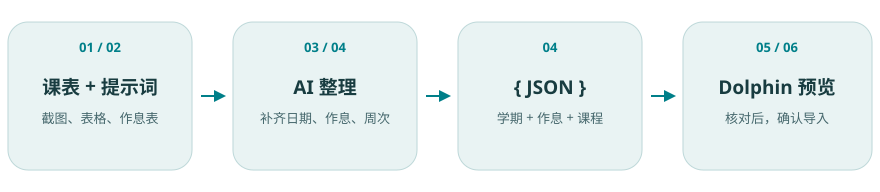

使用 ChatGPT
打开 ChatGPT 新对话，使用附件或上传入口添加课表截图 / 文件。粘贴刚才复制的提示词，把已知的开学日期、学期周数和作息信息一起发送。
打开 ChatGPT ↗课表导入 · 图文指南
从课表截图或表格开始，用 ChatGPT 或 DeepSeek 整理为 JSON，再回到 Dolphin Calendar 检查并导入。

准备
课表图片要能看清课程名称、星期、节次和周次。表格可使用学校提供的文件；图片模糊时，先补一张清晰截图。
此页示例均为合成数据。上传外部 AI 前，可遮去与导入无关的学号、姓名和联系方式。
统一格式
在应用的「导入课表」页面，点击「向 AI 输入提示词导入课表」，在弹框中点击「复制提示词」。这段提示词告诉 AI 应输出什么格式、如何处理缺失信息。
先用转换提示词整理为 JSON，再粘贴到上方。
选择一种工具即可
打开 ChatGPT 新对话，使用附件或上传入口添加课表截图 / 文件。粘贴刚才复制的提示词，把已知的开学日期、学期周数和作息信息一起发送。
打开 ChatGPT ↗打开 DeepSeek 新对话，从附件入口上传课表截图 / 文件。粘贴同一份提示词和已知资料后发送；如果所选模式不能读取图片，可改用清晰文本或支持图片的入口。
打开 DeepSeek ↗补齐后再转换
如果 AI 追问开学日期、逐节作息或周次，请依据学校资料补充。不能确认的教师或教室可留空；影响日期和节次的信息应先核实。
「实际开学日期为 2026-09-07，总共 4 周。第 1 节 08:00–08:45，第 2 节 08:55–09:40，第 3 节 10:00–10:45，第 4 节 10:55–11:40；午休 11:40–14:00；第 5 节 14:00–14:45，第 6 节 14:55–15:40。程序设计基础每周一第 1–2 节，1–4 周；学术英语周三第3节，第1、3周；设计与生活周五第5–6节，第2、4周。」
最终内容应包含 term（学期）、periods（逐节作息）和 courses（课程）。复制 JSON 内容本身，从开头的 { 到结尾的 }，不要把解释文字混进去。
回到 Dolphin
打开「导入课表」→ 展开「粘贴 JSON 内容」→ 粘贴 AI 输出 → 点击「解析并预览」。也可以保存为 .json 文件，再从「选择课表文件」导入。
3 个课程块 · 6 节 · 4 周
课程、提供的学期配置、逐节作息
教材、背景和应用偏好
第 1 节 08:00–08:45
第 2 节 08:55–09:40
…
午休 11:40–14:00
解析报错时，原课表保持不变。返回 AI 对话，把错误文字和相关源资料一起提供，请它修正 JSON；再重新解析。缺少的配置可能沿用当前课表，应在预览中主动确认。
操作演示
图文步骤已可独立完成操作。应用操作视频加载后会在此显示；页面不会自动播放。
仅供练习
示例课程、教师、教室均为虚构。JSON 示例包含 6 节真实分段的演示作息；完整 CSV 示例不设置开学日期，缺失配置沿用应用当前值。
先找学校官方逐节作息表，或向学校确认。课程连堂总时段无法确定内部课间；不能无依据平均拆分；已明确确认单节时长、课间时长和适用范围时，可按规则计算并核对。若选择保留应用现有作息，必须先核实它与你的学校相符。
「粘贴 JSON 内容」需要 JSON。请让 AI 按统一提示词重新输出 JSON；也可按 CSV 模板保存文件再导入，不能把普通说明或 Markdown 表格当作 JSON。
检查学期开始日期、课程星期和周次。今天可能在学期外或不在该课程的上课周内；请从月历选择源表中明确有课的日期。
教程本身不读取课表，只展示步骤、复制提示词和下载示例。你主动在 ChatGPT / DeepSeek 上传的资料由相应服务处理；返回 Dolphin 后，课表在本机解析和保存。